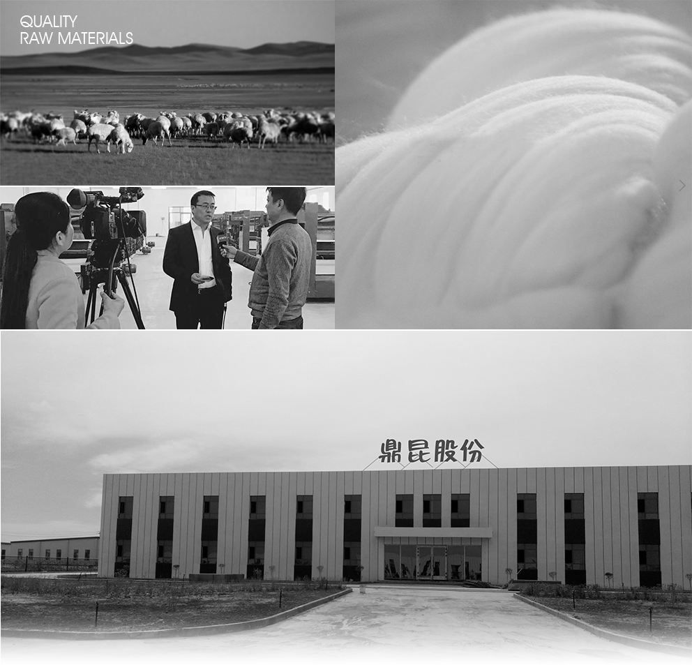

大美新疆，幅员辽阔。在这片热土上，曾经孕育了灿烂辉煌的文明。而在21世纪的今天，一带一路赋予了她更大的生机，新疆是我国羊绒主产区之一，羊绒产业将得到前所未有的发展。新疆的羊绒与内蒙等地的羊绒相比纤维要更加的细腻、短小一些，内蒙等地的羊绒纤维要粗长一些，但是保暖效果差不多。新疆羊绒制作出来的羊绒衫、羊绒被、羊绒披肩等产品，具有轻、薄、软的特点，相对来说更加的舒适。
新疆鼎昆纺织有限公司始建于2016年，是以羊绒产业为主体，集品牌营销、服装设计、产业咨询、服装面料、印染等为一体的大型集团公司。鼎昆拥有独立产业园区，占地面积40000平方米，是大新疆地区以服装生产、加工和出口为特色的重点工业园区。被新疆纺织工业协会授予新疆服装纺织产业集群示范基地；被新疆经委列为制造业特色基地。